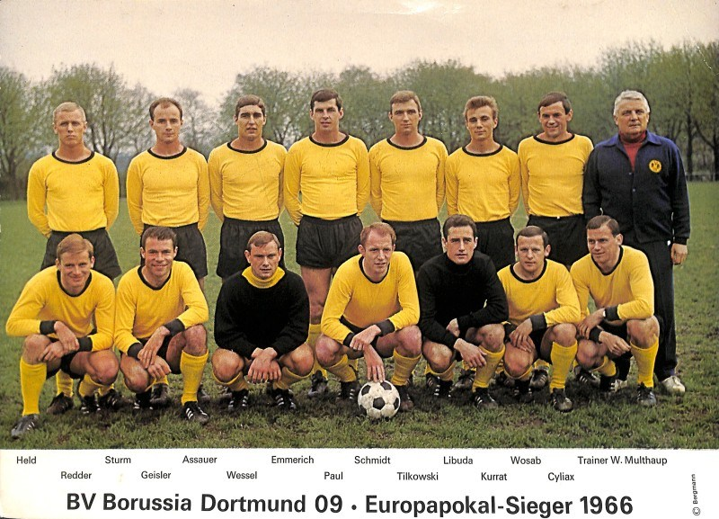
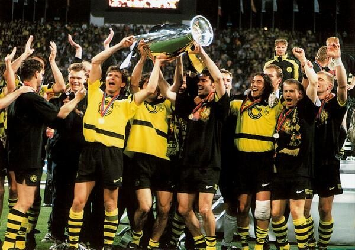
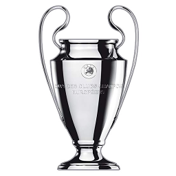
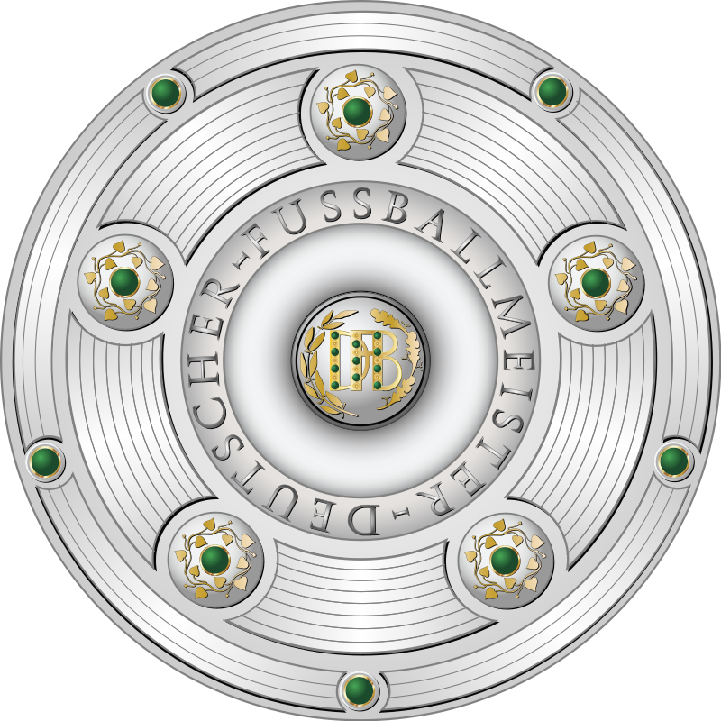
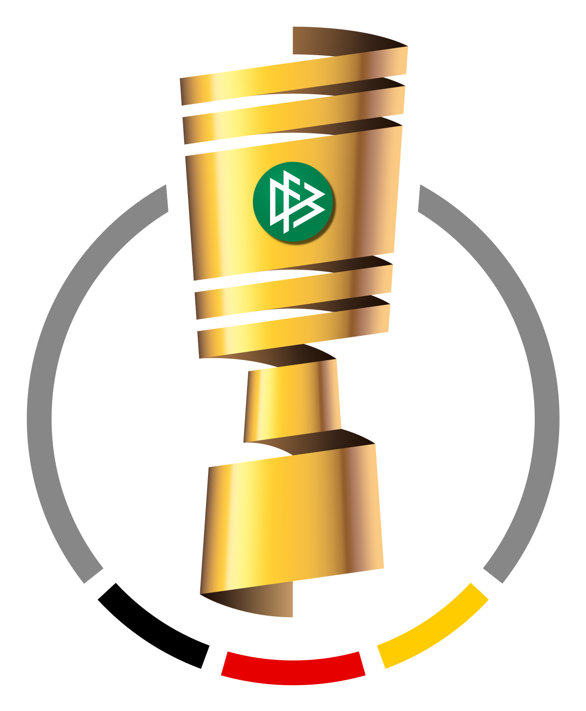
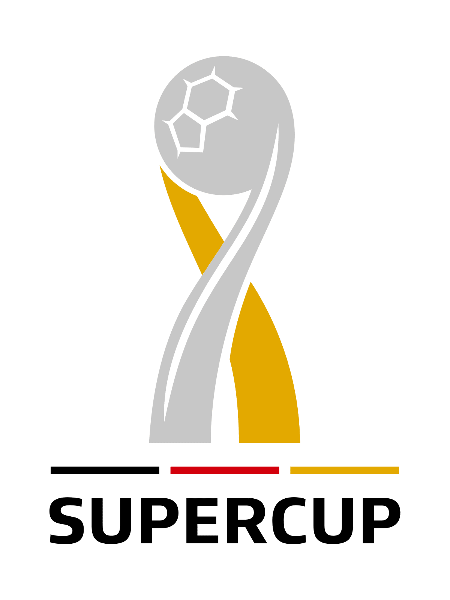

Ballspielverein Borussia 09 e.V. Dortmund, commonly known as Borussia Dortmund, BVB, or simply Dortmund, is a German sports club based in Dortmund, North Rhine-Westphalia. Founded in 1909 by eighteen football players from Dortmund, the football team is part of a large membership-based sports club with more than 145,000 members, making BVB the second largest sports club by membership in Germany. Dortmund plays in the Bundesliga, the top tier of the German football league system.
The stadium is one of the most famous football stadiums in Europe and is renowned for its atmosphere. It has a league capacity of 81,365 (standing and seated) and an international capacity of 65,829 (seated only). It is Germany's largest stadium, the seventh-largest in Europe, and the third-largest home to a top-flight European club after Camp Nou and the Santiago Bernabéu Stadium. It holds the European record for average fan attendance, set in the 2011–2012 season with almost 1.37 million spectators over 17 games at an average of 80,588 per game. Sales of annual season tickets amounted to 55,000 in 2015.
The 24,454 capacity Südtribüne (South Bank) is the largest terrace for standing spectators in European football. Famous for the intense atmosphere it breeds, the south terrace has been nicknamed the Die Gelbe Wand, meaning "The Yellow Wall". The Borusseum, the museum of Borussia Dortmund, is near the stadium.
The stadium hosted matches in the 1974 and 2006 FIFA World Cups. It also hosted the 2001 UEFA Cup Final. Various national friendlies and qualification matches for World and European tournaments have been played there as well as matches in European club competitions.
------ From Wikipedia
The club was founded on 19 December 1909 by a group of young men unhappy with the Catholic church-sponsored Trinity Youth, where they played football under the stern and unsympathetic eye of the local parish priest. Father Dewald was blocked at the door when he tried to break up the organising meeting being held in a room of the local pub, Zum Wildschütz. The founders were Franz and Paul Braun, Henry Cleve, Hans Debest, Paul Dziendzielle, Franz, Julius and Wilhelm Jacobi, Hans Kahn, Gustav Müller, Franz Risse, Fritz Schulte, Hans Siebold, August Tönnesmann, Heinrich and Robert Unger, Fritz Weber and Franz Wendt. The name Borussia is Latin for Prussia but was taken from Borussia beer from the nearby Borussia brewery in Dortmund.[9] The team began playing in blue and white striped shirts with a red sash, and black shorts. In 1913, they donned the black and yellow stripes so familiar today.
Over the next decades the club enjoyed only modest success playing in local leagues. They had a brush with bankruptcy in 1929 when an attempt to boost the club's fortunes by signing some paid professional footballers failed miserably and left the team deep in debt. They survived only through the generosity of a local supporter who covered the team's shortfall out of his own pocket.
The 1930s saw the rise of the Third Reich, which restructured sports and football organisations throughout the nation to suit the regime's goals. Borussia's president was replaced when he refused to join the Nazi Party, and a couple of members who surreptitiously used the club's offices to produce anti-Nazi pamphlets were executed in the last days of the war. The club did have greater success in the newly established Gauliga Westfalen, but would have to wait until after World War II to make a breakthrough. It was during this time that Borussia developed its intense rivalry with Schalke 04 of suburban Gelsenkirchen, the most successful side of the era (see Revierderby). Like every other organisation in Germany, Borussia was dissolved by the Allied occupation authorities after the war in an attempt to distance the country's institutions from its so-recent Nazi past. There was a short-lived attempt to merge the club with two others – Werksportgemeinschaft Hoesch and Freier Sportverein 98 – as Sportgemeinschaft Borussia von 1898, but it was as Ballspiel-Verein Borussia (BVB) that they made their first appearance in the national league final in 1949, where they lost 2–3 to VfR Mannheim.
|  |  |
|---|
|  |  |  |  | |
|---|---|---|---|---|
| UEFA Champions League | Bundesliga Championship | DFB-Pokal | DFB/DFL-Supercup | Intercontinental Cup |
| 1965/1966 | 1996/1997 | 1955/1956 | 1956/1957 | 1962/1963 | 1994/1995 | 1995/1996 | 2001/2002 | 2010/2011 | 2011/2012 | 1964/1965 | 1988/1989 | 2011/2012 | 2016/2017 | 1989/1990 | 1995/1996 | 2013/2014 | 2014/2015 | 2018/2019 | 1997 |
| Coach | Goalkeeper | Defence | Midfield | Attack |
|---|---|---|---|---|
| Lucien Favre |
|
|
|
|